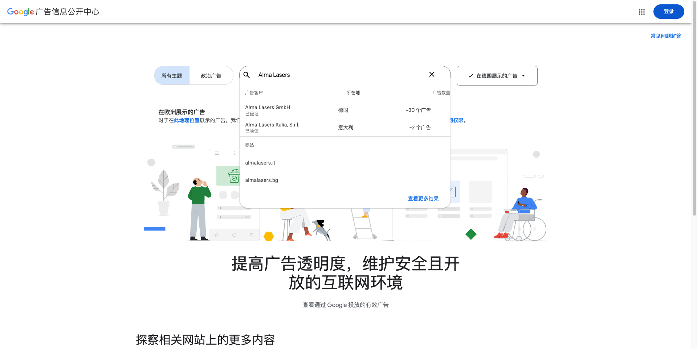

01
八类活动占比
28项活动
产品 / 主题 campaign5 · 18%
展会 / 外部会议4 · 14%
媒体 PR4 · 14%
节日品牌传播4 · 14%
峰会 / 伙伴会议3 · 11%
线上研讨会3 · 11%
内容栏目 / UGC3 · 11%
发布会 / 媒体活动2 · 7%
JAN—AUG 2026 · GLOBAL ACTIVITY INTELLIGENCE
Alma 2026 年不仅参加展会，还通过连续产品 campaign、线上研讨会、媒体活动、客户案例和专家内容，持续推广 Intelligent Aesthetics 与 Longevity 叙事。
更新至 2026.09.18
含社媒全年核验
明确城市与重点市场 9+
展会与
外部学术会议
峰会与
伙伴会议
线上学术
研讨会
Campaign、发布、
媒体与社群传播
ACTIVITY MIX & SCALE
Alma 的公开动作以持续内容传播为主，线下大型活动承担专业关系和产品体验，线上内容负责延长活动周期。
产品 / 主题 campaign5 · 18%
展会 / 外部会议4 · 14%
媒体 PR4 · 14%
节日品牌传播4 · 14%
峰会 / 伙伴会议3 · 11%
线上研讨会3 · 11%
内容栏目 / UGC3 · 11%
发布会 / 媒体活动2 · 7%
ACTIVITY DATABASE
点击活动卡查看完整地点、人物、产品和来源。展会突出参会类型与展位，campaign 突出内容结构和传播结果。
没有符合条件的活动。
YOUTUBE AUDIT
PAID MEDIA EVIDENCE
来自 Google 广告信息公开中心与 Meta 广告资料库的官方数据（2026-09-21 核查），当场可复现。

| 平台 | 区域 | 广告主 | 在投广告 |
|---|---|---|---|
| Google 广告信息公开中心 | 德国 | Alma Lasers GmbH（已验证） | 约 30 个 |
| Google 广告信息公开中心 | 意大利 | Alma Lasers Italia, S.r.l.（已验证） | 约 2 个 |
| Google 广告信息公开中心 | 美国 | — | 无自有广告 |
| Meta 广告资料库 | 美国 | 关键词 "Alma Lasers"（诊所端为主） | 约 31 条 |
Meta 美国区约 31 条在投广告主要来自诊所端（例：蒂华纳 Beauty Zone Spa 投放 Soprano ICE 脱毛广告）。市场含义：Alma 的付费媒体集中在欧洲（德国），美国市场以 PR、展会与 webinar 驱动，自有付费广告弱；诊所端协同广告约 31 条，明显低于 Fotona 的约 300 条。金额 / CPC / ROAS 平台不公开。
WHAT WE CAN LEARN & DO
对应 Alma 已开展的活动，列出可以借鉴的组织方式，以及我们可以优先增加的市场活动。
Pixel Peel、IPL Consistency、Longevity
同一主题按产品引入、医生判断、病例、技术原理、FAQ 和 webinar 连续发布，让一次主题维持数周声量。
把连续内容接入预约、试用、医生咨询和 CRM 培育，用转化数据衡量 campaign，而不只统计播放量。
430 名医生、45 个国家、19 位专家
将专家演讲、live demo、病例讨论、分组课程和社交活动组合成品牌年度学术旗舰。
在中国和重点区域建立小型季度 Academy、分级认证和会后病例辅导，形成高频医生教育。
Welcome to the Aesthetics Clinic、Soprano 体验系列
让诊所经营者、医生和体验者讲述工作流、患者体验和业务增长，比单纯产品介绍更具体。
增加设备利用率、治疗数量、复购、客单价和长期随访数据，让客户故事更接近采购决策。
Pixel Peel、IPL、Aging Decoded
先用短内容建立问题，再通过直播由专家解释 protocol、患者选择和临床结果。
增加中文点播课程、课后测试、病例提交和销售线索分级，把直播变成可复用培训资产。
纽约 Bio-Boost 早餐、印度 Harmony 发布
邀请美容编辑、influencer、医生和行业媒体现场体验，将技术信息转化为媒体选题。
针对中国媒体、诊所经营媒体和消费者教育平台设计不同的体验内容与合规传播材料。
Almarketing Contest、多元美与节日内容
通过比赛、节日和价值观内容让全球伙伴参与创作，扩大本地账号与总部内容的联动。
加入病例质量、专业教育和线索贡献指标，设计医生病例赛、诊所开放日及渠道联合内容计划。
CHANNELS
Alma 的渠道组合以 Instagram 高频内容为中心，官网承担活动页和新闻稿，线下会议、媒体报道与 webinar 共同放大产品主题。
发布展会页、峰会信息、奖项和战略新闻，提供可核验的日期、地点与活动结果。
Reels、轮播图和报名帖承担预热、体验、专家解释、现场复盘与长期 campaign。
通过展位、symposium、live demo 和病例讨论触达医生、诊所与全球伙伴。
围绕患者选择、protocol、光学、临床文献与 Longevity 进行深度学术说明。
Daily Mail、Marie Claire、Modern Luxury 等媒体帮助产品进入消费者与编辑语境。
通过全球伙伴会议、诊所案例和 Almarketing Contest 激活渠道共同传播。
SOURCES
Alma Lasers 全球官网 Events、Press / Newsroom（61 篇新闻稿逐条核验）、官方 Instagram（2025.09—2026.09 全年 163 帖登录态逐条抓取）、官方 YouTube 频道、公开媒体报道及用户提供的研究工作簿。活动日期、地点、展位、参与者和公开结果均保留对应来源；无法核实的项已在卡片中标明"未公开"。公司横向规模数据（110+ 国家、46,000 家诊所、8 年营收约 1.38 亿→4 亿美元）来自 Leadership Transition 官方新闻稿。
下载社媒原始数据 ↓
INSTAGRAM FULL-YEAR AUDIT · 2025.09—2026.09
@alma.lasers.international
发帖节奏 8–18 帖/月，平均点赞 106，最高单帖 1,007（Opus 主题，2025-10）。全年 0 条 paid partnership 标签——广告不走 IG 付费合作标注，预算集中在 PR、展会与 webinar。内容主轴：Bio-Boost（45 帖）、Longevity（19 帖）、Pixel Peel / Winter Reset（22 帖）、展会与 Academy 复盘、webinar 预告。
近一年 campaign 时间线（帖内关键词聚类，日期可逐帖核查）
Bio-Boost 主线起步；Opus 发布与直播预热高峰（9-10 月点赞最高帖均在此）
IMCAS 预热 14 帖；02-16 Pixel Peel 与 Winter Reset 同步上线，与官网治疗页 + 发布型 webinar 三线联动
Academy Lisbon 集中轰炸 14 帖；04-25 起 Longevity 叙事 19 帖
Bio-Boost「返工季」场景连载（同一主题连发 3-4 帖）；Aging Decoded 配套内容
Alma IQ「10 种光模式」专题 + Aesthetic.Biz Rio 预热